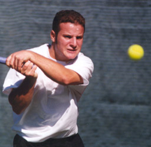
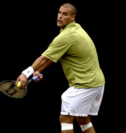

Previous: A Practical Guide to Peak Performance - Part 2 | 🏠 Mental Game Home | Next: Becoming a Great Competitor
Be Wary of Hidden Fear
Comprehensive unified tennis knowledge base — Fundamentals, Stroke Analysis, Reference Library, and more
Be Wary of Hidden Fear
By Allen Fox, Ph.D.
When you see a player do something irrational, you are probably seeing hidden fear in action.
There is always some fear involved in closely contested tennis matches. And because it often lurks unseen beneath the level of conscious thought, fear can cause a great deal of trouble.
In fact, whenever you see a player do something irrational on court which obviously hurts his chances of winning the match, you are probably observing hidden fear in action.
A good example occurred a few years ago when I was coaching the Pepperdine men's college team at the league championship tournament. Two of my players, Mike and Tom, met in the quarter-finals, and their positions in the team line-up hinged on the outcome of the match.
It was particularly tense since only six people get to play singles and the loser would be #7, thereby relegating himself to the bench in the next dual match. Mike felt special pressure because he had had a bad year and this was his big chance to prove himself.

After a furious three hour battle, hidden fear determined the outcome between two of my college players.
They battled furiously for over three hours under a broiling sun. Tom served unsuccessfully for the match at the end of the second set, and Mike faltered when he served at 5-4 in the third.
As fate would have it, they ended up in a tie-breaker. Mike, who was having sporadic trouble with his serve throughout the set, hit two double faults in the breaker to end up trailing 2-5 with his own serve to follow.
At this crucial stage (behind but by no means beaten), Mike became so upset over his serving that he opted to serve underhand for the rest of the match! On the final two points, Tom knocked off one easy serve with his return and then Mike double faulted with two underhanded serves. What a disastrous and foolhardy way to throw away three hours of hard work!

After hitting two double faults in the tiebreaker, the losing player elected to serve underhanded.
The decision to serve underhand appeared reasonable to Mike in the instant he made it. "I was double faulting with my regular serve," he told me afterward, "what else could I do?" But to a reasonable outsider, it was obviously crazy since there was no chance at all of winning the match once Mike began serving underhand. So why did he make such an irrational decision?
He did it because the tremendous stress of the situation, coupled with the fear that he was going to lose the match, made Mike want to escape. So he took the easy way out and quit.
Mike didn't want to try anymore since he was deathly afraid he was going to lose despite any efforts he might make. He was choking and he was afraid of his own weakness. He wanted to blame the loss on something besides himself, so he separated his serve from the rest of his being and blamed the loss on it.
He didn't lose, his serve let him down. He didn't want to face the fact that there was nothing wrong with his serve other than the quavering hand that was swinging the racquet. And most of all, he did not want to admit any of these unpleasant facts to himself.
Unconscious fear comes in a thousand disguises and works by distorting the facts of the situation. It makes problems swell out of all proportion to reality. Real but minor difficulties appear insurmountable.
Unconscious fear can make a problem like a bad line call seem insurmountable.
The bad call, for instance, can make an insecure competitor stop trying. "Let the cheater have the match if he wants it that badly" is sometimes the rationalization for throwing in the towel. But this is obviously no reason to quit. If you are angry at your opponent for cheating you, the rational response is to try harder to win the match so you can teach the cheater a lesson. Tanking just gives him what he wants.
The real problem is that the insecure competitor fears that he will lose the match in any case. When he gets cheated and becomes angry at his opponent, he really wants to win the match even more.
But he subconsciously knows that the more he wants to win and the harder he tries, the more agonizing it will be if he loses. In fact, he really wants to win too much and dares not risk the agony of fighting to the end and losing. The safe way for him to escape this painful dilemma is to claim he does not want to win any more and quit. That way he can't lose.
And this same underlying fear can magnify your problems when your favorite racquet breaks, you have a sore muscle, or the guy on the next court is talking too loud. Yes you have a problem. But if you habitually get emotional and help your problem overwhelm you rather than simply staying cool and trying to solve it, you will end up a habitual loser.
The safe way to escape the agony of fighting and possibly losing is to stop trying.
Psychologists call these kinds of perceptual distortions "defense mechanisms." They act at an unconscious level to shield us from facts which we have difficulty accepting at a conscious level.
But no one is obliged to suffer indefinitely from these runaway defense mechanisms. Anyone can become a more effective competitor by keeping a few simple ideas in mind.
The first is that forewarned is forearmed. Once you know that fear of losing underlies most maladaptive behavior on court, you can be on the lookout for it. Fear is able to work its poison only because it comes in various disguises and we are unaware of it.
If you accept crazy, fear-driven thoughts as real, you are in trouble. Stay vigilant and reject maladaptive ideas.
Then follow the number one rule of the successful competitor: never do anything on court that does not help you win the match. It almost seems too simple. But if you could always abide by this rule, you would automatically avoid most competitive pitfalls.
When you are getting emotional during a match, take a second to ask yourself whether the thoughts you are having or the actions you are planning will help you win. If they won't, make an effort to change them to thoughts or actions that will.
And finally, remember that no one cares why you lose a match. So don't waste your mental energy during match play thinking about the good reasons you have for losing. Real as they may be, your coaches and friends will just get bored listening to excuses. Use your energy to solve your problems and figure out ways to win.
This article is excerpted from Allen's new book, Tennis: Winning the Mental Match, which will be available at the end of 2010 on Amazon and on Allen's new website, www.allenfoxtennis.net.
Read More From Allen!
Visit him at www.allenfoxtennis.net

Winning the Mental Match Dr. Allen Fox
Tennis is mentally the most difficult sport due to it’s personal nature which makes winning and losing feel more important than they are. In this new book, Allen offers his proven solutions to problems such as choking, reducing stress, finishing matches, and developing confidence. Based on a life time of high level play and coaching success, it’s a must for all competitive players.
Click Here to Order.

Winning may not be everything, but Dr. Allen Fox points out that, if we are honest with ourselves, winning is still eminently preferable to losing. In his new book, The Winner's Mind, Allen lays out an original step-by-step plan for succeeding at any of life's endeavors, based on his first hand and very personal observations of the careers of both world-class tennis players and successful businessman.
The bottom line is that even if you are not a born champion--and only a tiny percentage of us are--you can still use the success strategies of champions to tilt the odds in your favor. Writing with brutal honesty and dry humor, Fox lays out the common mental characteristics of winners in sports and in life. He explains the critical role of intellect over emotion. He analyzes the struggle between ambition and fear and the insidious and pervasive fear of failure that undermines so many of us.
He then outline how to confront and overcome these fears in your life and career, even when they are initially subconscious. Must reading from one of the great thinkers in tennis, and a Renaissance Man in life. Click Here to Order.
To purchase this book you can also send a check for $17.95 to Allen Fox, 1120 Inverness Place, San Luis Obispo, CA. 93401. The price includes shipping.

Allen Fox PhD is a former world class player, a coach, a psychologist, and one of the most original and insightful analysts in modern tennis. A top 10 American player from the glory days before Open tennis, Fox played many of the legendary greats, among them Roy Emerson, Rod Laver, Stan Smith, and Arthur Ashe. At Pepperdine he developed the men's tennis program into an elite contender for national titles, and gave Brad Gilbert the insights that became the foundation for "Winning Ugly". His book Think to Win is a modern classic. He has also starred in a series of acclaimed videos, including Pro Secrets of Match Play and Allen Fox's Ultimate Tennis Lesson.
Source: tennisplayer.net archive — Be Wary of Hidden Fear.docx (John Yandell teaching library, 2002-2022). Extracted and rendered as HTML for Tennis Future Lab.